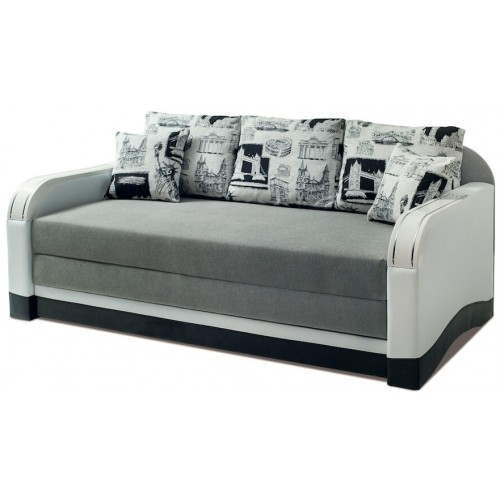

Большая часть населения, тем более в маленьких городах, живут в небольших квартирах, где выделить целую комнату для полноценного отдыха на большой двуспальной кровати не всегда представляется возможным. Прекрасной альтернативой является диван-кровать, вмещающий в себя несколько функций. В дневное время служит местом, где можно посидеть, посмотреть телевизор или почитать книгу, рассадить несколько гостей, а ночью в разложенном состоянии представляет собой идеальное место для полноценного отдыха.
Преимущества дивана-кровати
Стоит изучить, какие существуют основные преимущества у такой мебели, и почему она в последнее время набирает все больше популярности.
Диван-кровать экономит место в комнате, так как на дневное время суток его можно сложить.
Простая конструкция изделия. Раскладывается эта мебельбыстро и без проблем.
Нет необходимости докупать матрас (если вас не интересует топпер), такой диван уже оборудован полноценным спальным местом.
Также стоит отметить, что при правильном выборе механизма, наполнителя и обивки, диван прослужит своему владельцу долгое время. Как же правильно сделать выбор? Давайте разбираться.

Базовые знания о диване
Перед покупкой такой важного и нужного предмета мебели следует подумать, для каких целей он приобретается: